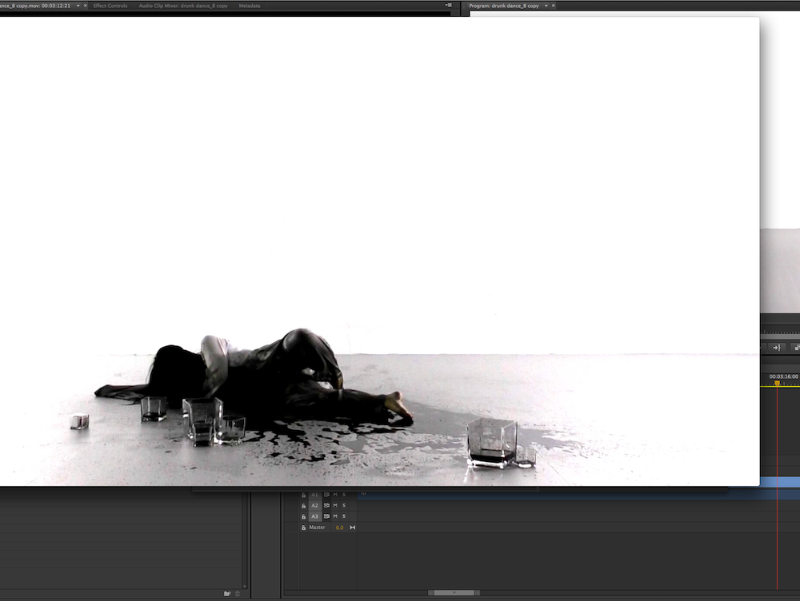

Sober 醒
This is a piece of Chinese water-sleeves dance about drinking and sobriety. Sober 醒 has two parts. The first part depicts the protagonist drinking alcohol to the point of losing consciousness. The second part is a rewind where the protagonist comes back to sobriety. Black ink represents alcohol. The heavier and heavier stains of black ink on the originally white dress symbolize the heavier and heavier influence of alcoholic substance on the protagonist; the stains can also be interpreted in other ways. As the protagonist consumes alcohol, her desire for alcohol grows. The world becomes more and more chaotic and eventually the protagonist collapses.
Sober 醒 explores the traditional romantic connotation of wine drinking and being drunk in Chinese history and literature, as well as the realistic chaos and remorse they can induce.

Video editing.
This is the scene I set up for shooting the dance video.